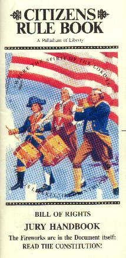
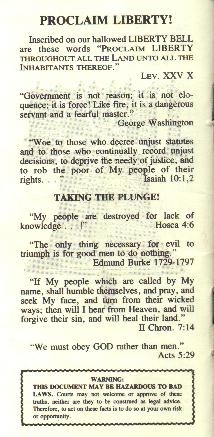

|
Courageous Lion He can be emailed at...Courageous Lion's Den |
 |
"You have rights atecedent to all earthly governments; rights that cannot be
repealed or restrained by human laws; rights derived from the Great
Legislator of the Universe."
JURY
DUTY
YOU ARE ABOVE THE "LAW"!
JURY RIGHTS
LAW OF
THE LAND
TEN COMMANDMENTS
COMMUNIST MANIFESTO
GIVE UP RIGHTS?
JURY TAMPERING?
PATRICK HENRY SHOCKED
JURY OF PEERS
FREEDOM FOR WILLIAM PENN
JEFFERSON'S WARNINGS!
INDEX TO THE DOCUMENTS
Jury Duty!
The purpose of this information if to revive, as Jefferson put it, "The
Ancient Principles." It is not designed to promote lawlessness or a
return to the jungle. The "Ancient Principle" refer to the Ten
Commandments and the Common Law. The Common Law is, in simple
terms, just plain common sense and has its roots in the Ten Commandments.
In 1776 we came out of BONDAGE with FAITH, UNDERSTANDING and COURAGE. Even against great odds, and with much bloodshed, we battled our way to achieve LIBERTY. LIBERTY is that delicate area between the force of government and FREEWILL of man. LIBERTY brings FREEDOM of choice to work, to trade, to go and live wherever one wishes; it leads to ABUNDANCE. ABUNDANCE, if made an end in itself, will result in COMPLACENCY which leads to APATHY. APATHY is the "let George do it" philosophy. This always brings DEPENDENCY. For a period of time, dependents are often not aware they are dependent. They delude themselves by thinking they are still free - "We never had it so good." - "We can still vote, can 't we?" Eventually abudance diminishes and DEPENDENCY becomes known by its true nature: BONDANGE!!!
There are few ways out of bondage. Bloodshed and war aften result, but our founding fathers learned of a better way. Realizing that a CREATOR is always above and greater than that which He creates, they established a three vote system by which an informed Citizenry can control those acting in the name of govenment. To be a good master you must always remember the true "pecking order" or chain of command in this nation:
The base of power was to remain in WE THE PEOPLE but unfortunately, it was lost to those leaders acting in the name of government, such as politicians, bureaucrats, judges, lawyers, etc.
As a result America began to function like a democracy instead of a REPUBLIC. A democracy is dangerous because it is a one-vote system as opposed to a Republic, which is a three-vote system. Three votes to check tyranny, not just one. American Citizens have not been informed of their other two votes.
Our first vote is at the polls on election day when we pick those who are to represent us in the seats of government. But what can be done if those elected officials just don't perform as promised or expected? Well, the second two votes are the most effective means by which the common people of any nation on earth have ever had in controlling those appointed to serve them in government.
The second vote comes when you serve on a Grand Jury. Before anyone can be brought to trial for a capital or infamous crime by those acting in the name of government, permission must be obtained from people serving on the Grand Jury! The Minneapolis Star and Tribune in the March 27th 1987 edition noted a purpose of the Grand Jury this way: "A grand jury's purpose is to protect the public from an overzealous prosecutor."
The third is the most powerful vote; this is when you are acting as a jury member during a courtroom trial. At this point, "the buck stops" with you! It is in this setting that each JUROR has MORE POWER than the President, all of Congress, and all of the judges combined! Congress can legislate (make law), the President or some other bureaucrat can make an order or issue regulations, and judges may instruct or make a decision, but no JUROR can ever be punished for voting "Not Guilty!" Any JUROR can, with impunity, choose to disregard the instructions of any judge or attorney in rendering his vote. If only one JUROR should vote "Not Guilty" for any reason, there is no conviction and no punishment at the end of the trial. Thus, those acting in the name of government must come before the common man to get permission to enforce a law.
As a JUROR in a trial setting, when it comes to your individual vote of innocent or guilty, you truly are answerable only to GOD ALMIGHTY. The First Amendment to the Constitution was born out of this great concept. However, judges of today refuse to inform JURORS of their RIGHTS. The Minneapolis Star and Tribune in a news paper article appearing in its November 30th 1984 edition, entitled: "What judges don't tell the juries" stated:
"At the time of the adoption of the Constitution, the jury's role as defense against political oppression was unquestioned in American jurisprudence. This nation survived until the 1850's when prosecutions under the Fugitive Slave Act were largely unsuccessful because juries refused to convict."
"Then judges began to erode the institution of free juries, leading to the absurd compromise that is the current state of the law. While our courts uniformly state juries have the power to return a verdict of not guilty whatever the facts, they routinely tell the jurors the opposite."
"Further, the courts will not allow the defendants or their counsel to inform the jurors of their true power. A lawyer who made...Hamilton's argument would face professional discipline and charges of contempt of court."
"By what logic should juries have the power to acquit a defendant but no right to know about the power? The court decisions that have suppressed the notion of jury nullification cannot resove this paradox."
"More than logic has suffered. As orignally conceived, juries were to be a kind of safety valve, a way to soften the bureaucratic rigidity of the judicial system by introducing the common sense of the community. If they are to funciton effectively as the 'conscience of the community,' jurors must be told that they have the power and the right to say no to a prosecution in order to achieve a greater good. To cut jurors off from this information is to undermine one of our most important institutions."
"Perhaps the community should educate itself. Then Citizens called for jury duty could teach the judge a needed lesson in civics."
This information is designed to bring to your attention one important way our nation's founders provided to insure that you, (not the growing army of politicians, judges, lawyers, and bureaucrats, rule this nation. It will focus on the true power you possess as a JUROR, how you got it, why you have it, and remind you of the basis on which you must decide not only the facts placed in evidence but also the validity or application of every law, rule, regulation, ordinance, or instruction given by any man seated as a judge or attorney when you serve as a JUROR.
One JUROR can stop tyranny with a "NOT GUILTY VOTE!" He can nullify bad law in any case, by "HANGING THE JURY!"
I am only one, but I am one. I cannot do everything, but I can do something. What I can do, I should do and, with the help of
God, I will do!
Everett Hale
The only power the judge has over the JURY is their ignorance!
"WE THE PEOPLE," must relearn a desperately needed lesson in civics.
The truth of this question has been answered by many testimonies and historical events. Consider the following:
"The jury has a right to judge
both the law as well as the fact in controversy."
"The jury has the right to determine both the law and the facts."
"the jury has the power to
bring a verdict in the teeth of both law and fact."
"The law itself is on trial quite as much as the cause which is to be
decided."
"The pages of history shine on
instance of the jury's exercise of its prerogative to disregard
instructions of the judge..."
The general misconception is that any statute passed by legislators bearing the appearance of law constitutes the law of the land. The U.S. Constitution is the supreme law of the land, and any statute, to be valid, must be in agreement. It is impossible for a law which violates the Constitution to be valid. This is succintly stated as follows:
"All laws which are repugnant to the Constitution are null and void.
"
Marbury vs Madison, 5 US (2 Cranch) 137, 174, 176,
(1803)
"Where rights secured by the Constitution are involved, there can be no rule making or legislation which would abrogate them
quot;
Miranda vs Arizona, 384 US 436 p. 491.
"An unconstitutional act is not law; it confers no right; it imposes no duties;
affords no protection; it creates no office; it is in legal contemplation, as
inoperative as though it had never been passed."
Norton
vs Shelby County118 US 425 p.442
"The general rule is that an unconstitutional statute, though having the form and the name of law, in in reality no law, but is wholly void, and ineffective for any purpose; since unconstitutionality dates from the time of its enactment, and not merely from the date of the decision so branding it.
No one is
bound to obey an unconstitutional law and no courts are bound to enforce
it."
16th American Jurisprudence 2d, Section 177
late
2nd, Section 256
The TEN COMMANDMENTS represent GOD'S GOVERNMENT OVER MAN! GOD commands us for our own good to give up wrongs and not rights! HIS system always results in LIBERTY and FREEDOM! The Constitution and the Bill of Rights are built on this foundation, which provides for punitive justice. It is not until one damages another's person or property that he can be punished. The Marxist system leads to bondage and GOD'S system leads to LIBERTY! Read very carefully:
1. Thou Shalt have no other gods before Me. 4. Remember the Sabbath to keep it Holy. 5. Honor thy father and mother. | 6. Thou shalt not murder.
10. Thou shalt not covet. |
Directly above the Chief Justice's chair is a tablet signifying the TEN COMMANDMENTS When the Speaker of the House in the U.S. Congress looks up, his eyes look into the face of Moses. "The Bible is the Book upon which this Republic rests."
- Andrew Jackson, Seventh President of the United States
"The
moral principles and precepts contained in the Scriptures ought to form
the basis of all our civil constitutions and laws. All the miseries and
evils which men suffer from, vice, crime, ambition, injustice,
oppression, slavery, and war, proceed from the despising or neglecting
the precepts contained in the Bible."
-Noah Webster
The Communist Manifesto represents a misguided philosophy, which teaches the Citizens to give up their RIGHTS for the sake of the "common good," but it always ends in a police state. This is called preventive justice. Control is the key concept. Read carefully:
| 1. Abolition of private property. 2. Heavy progressive income tax. 3. Aboliton to all rights of 4. Confiscation of property of all 5. A Central bank |
6. Government control of Communications 7. Government ownership of factories and 8. Government control of labor. 9. Corporate farms, regional planning. 10. Free education for all children in |
When the people fear the government you have tyranny; when the government fears the people, you have liberty.
Politicians, bureaucrats and especially judges would have you believe that too much freedom will result in chaos. Therefore, we should gladly give up some RIGHTS for the good of the community. In other words, people acting in the name of government, say we need more laws and more JURORS to enforce these laws - even if we have to give up some more RIGHTS in the process. They believe the more laws we have, the more control, thus a better society. This theory may sound good on paper, and apparently many of our 'leaders' think this way, as evidenced by the thousands of new laws that are added to the books each year in this country. But, no matter how cleverly this Marxist argument is made, the hard fact is that whenever you give up a RIGHT you lose a "FREE CHOICE"!
This adds another control. Control's real name is BONDAGE! The logical conclusion would be, if giving up some RIGHTS, produces a better society, then by giving up all RIGHTS we could produce the perfect society. We could chain everybody to a tree, for lack of TRUST. This may prevent a crime, but it would destroy PRIVACY, which is the heartbeat of FREEDOM! It would also destroy TRUST which is the foundation for DIGNITY. Rather than giving up RIGHTS, we shoud be giving up wrongs! The opposite of control is not chaos. More laws do not make less criminals! We must give up wrongs, not rights, for a better society! William Penn of the British House of Commons, once proclaimed, "Necessity is the plea for every infringement of human liberty; it is the argument of tyrants; it is the creed of slaves."
NATURAL RIGHTS ARE THOSE RIGHTS such as LIFE (from conception), LIBERTY and the PURSUIT OF HAPPINESS e.g. FREEDOM of RELIGION, SPEECH, LEARNING, TRAVEL, SELF-DEFENSE, ETC. Hence laws and statutes which vilolate NATURAL RIGHTS, though they have the color of law, are not law but imposters! The U.S. Constitution was written to protect these NATURAL RIGHTS from being tampered with by legislators. Further, our forefathers also wisely knew that the U.S. Constitution would be utterly worthless to restrain government legislators unless it was clearly understood that the people had the right to compel the government to keep within the Constitutional limits.
In a jury trial the real judges are the JURORS! Surprisingly, judges are actually just referees bound by the Constitution!
Lysander Spooner in his book Essay on the Trial by Jury wrote as follows:
"Government
is established for the protection of the weak against the strong. This
is the principal, if not the sole motive for the establishment of all
legitimate government. It is only the weaker party that lose their
liberties, when a government becomes oppressive. The stronger party, in
all governments are free by virtue of their superior strength. They
never oppress themselves. Legislation is the work of the stronger party;
and if, in addition to the sole power of legislation, they have the
sole power of determining what legislation shall be enforced, they have
all power in their hands, and the weaker party are the subjects of an
absolute government. Unless the weaker party have a veto, they have no
power whatever in the government and ...no liberties...The trial by jury
is the only institution that gives the weaker party any veto power upon
the power of the stronger. Consequently it is the only institution that
gives them any effective voice in the government, or any guaranty
against oppression."
The Complete TEXT of The Essay on the Trial by Jury is HERE
The Charge to the JURY in the First JURY Trial before the supreme Court of the United States illustrates the TRUE POWER OF THE JURY. In the February term of 1794, the supreme (Supreme is not capitalized in the Constitution, however Behavior is. Art. III) Court conducted a JURY trial and said: "...it is presumed, that the juries are the best judges of facts; it is, on the other hand, presumed that the courts are the best judges of law. But still both objects are within your power of decision."
"You have a right to take upon yourselves to judge of both, and to determine the law as well as the fact in controversy."
(State of Georgia vs. Brailsford, et al, 3 Dall 1)
"The JURY
has an unreviewable and unreversible power...to aquit in disregard of
the instructions on the law given by the trial judge..." (emphasis
added)
U.S.vs Dougherty, 473 F 2nd 1113, 1139, (1972)
Hence, JURY disregard to the limited and generally conviction-oriented evidence presented for its consideration, and JURY
disregard for what the trial judge wants them to believe is the
controlling law in any particular case (sometimes referred to as "JURY
lawlessness"{jury lawlessness means willingness to nullify bad law}) is
not something to be scrupulously avoided, but rather encouraged.
Witness the following quotation from the eminent legal authority above
mentioned: "Jury lawlessness is the greatest corrective of law in its
actual administration. The will of the state at large imposed on a
reluctant community, the will of a majority imposed on a vigorous and
determined minority, find the same obstacle in the local JURY that formerly confronted kings and ministers." (emphasis added)
Dougherty, cited above, note 32 at 1130
Almost every JURY in the land is falsely instructed by the judge when it is told it must accept as the law that which is given to them by the court, and that the JURY can decide only the facts in the case. This is to destroy the purpose of a Common Law JURY, and to permit the imposition of tyranny upon the people.
"There is nothing more terrifying than ignorance in action."
"To
embarass justice by a multiplicity of laws, or to hazard it by
confidence in judges, are the oposite rocks on which all civil
institutions have been wrecked."
"...The letter killeth, but the spirit giveth life."
II Corinthians 3 vs 6
"It is error alone which needs the support of government. Truth can stand by itself."
Thomas Jefferson
The JURY'S
options are by no means limited to the choices presented to it in the
courtroom. "The jury gets its understanding as to the arrangements in
the legal system from more than one voice. There is the formal
communicaiton from the 'judge'. There is the informal communication from
the total culture - literature, current comment, conversation; and, of
course, histo
ry and tradition."
Dougherty, cited above, at 1135.
Without the power to decide what facts, law and evidence are applicable. JURIES cannot be a protection to the accused. If people acting in the name of government are permitted by JURORS to dictate any law whatever, they can also unfairly dictate what evidence is admissible or inadmissable and thereby prevent the WHOLE TRUTH from being considered. Thus if government can manipulate and control both the law and evidence, the issue of fact becomes virtually irrelevant. In reality, true JUSTICE would be denied leaving us with a trial by government and not a trial by JURY!
Heroes are men of glory who are so honored because of some heroic deed. People often out of gratutude yield allegiance to them. Honor and allegiance are nice words for power! Power and allegiance can only be held rightfully by trust as a result of continued character.
When people acting in the name of government violate ethics, they break trust with "WE THE PEOPLE." The natural result is for "WE THE PEOPLE" to pull back power (honor and allegiance).
The loss of power creates fear for those losing the power. Fearing the loss of power, people acting in the name of government often seek to regain or at least hold their power. Hence, to legitimatize their quest for control, laws and force are often instituted.
Unchecked power is the foundation of tyranny. It is the JUROR'S duty to use the JURY ROOM as a vehicle to stem the tide of oppression and tyranny: To prevent bloodshed by peacefully removing power from those who have abused it. The JURY is the primary vehicle for the peaceable restoration of LIBERTY, POWER AND HONOR TO "WE THE PEOPLE!"
Your vote of NOT GUILTY must be respected by all other members of the JURY -it is the RIGHT and the DUTY of a JUROR to Never, Never, NEVER yield his or her sacred vote - for you are not there as a fool, merely to agree with the majority, but as an officer of the court and a qualified judge in your own right. Regardless of the pressures or abuse that may be heaped on you by any other members of the JURY with whom you may in good conscience disagree, you can await the reading of the verdict secure in the knowledge you have voted your own conscience and convictions - and not those of someone else.YOU ARE NOT A RUBBER STAMP!
By what logic do we send our youth to battle tyranny on foreign soil, while we refuse to do so in our courts? Did you know that many of the planks of the "Communist Manifesto"are now represented by law in the U.S.? How is it possible for Americans to denounce communism and practice it simultaneously?
The JURY judges the Spirit, Motive and Intent of both the law and the Accused, whereas the prosecutor only represents the letter of the law.
Therein lies the opportunity for the accomplishment of "LIBERTY and JUSTICE for ALL." If you, and numerous other JURORS throughout the State and Nation begin and continue to bring in verdicts of NOT GUILTY in such cases where a man-made statute is defective or oppressive, these statutes will become as ineffective as if they had never been written.
"If
ye love wealth better than liberty, the tranquility of servitude better
than the animating contest of freedom, go home from us in peace. We ask
not your counsels or your arms. Crouch down and lick the hands which
feed you. May your chains set lightly upon you, and may posterity forget
that ye were out countrymen."
Young Christian lawyer Patrick Henry saw why a JURY of PEERS is so vital to FREEDOM! It was March 1775 when he rode into a small town of Culpepper, Virginia. He was totally shocked by what he saw! There, in the middle of the town square was a minister tied to a whipping post, his back laid bare and bloody with the bones of his ribs showing. He had been scourged mercilessly like JESUS, with whips laced with metal.
Patrick Henry is quoted as saying: "When they stopped beating him, I could see the bones of his rib cage. I turned to someone and asked what the man had done to deserve such a beating as this."
The reply given him was that the man being scourged was a minister who refused to take a license. He was one of twelve who were locked in jail because they refused to take a license. A license often becomes an arbitrary control by government that makes a crime out of what ordinarily would not be a crime. IT TURNS A RIGHT INTO A PRIVILEGE! Three days later they scourged him to death.
This was the incident which sparked Christian lawyer Patrick Henry to write the famous words which later became the rallying cry of the Revolution. "What is it that Gentlemen wish? What would they have? Is life so dear, or peace so sweet, as to be purchased at the price of chains and slavery? Forbid it, Almighty God! I know no what course others may take, but as for me, GIVE ME LIBERTY OR GIVE ME DEATH!"(view complete speech here) Later he made this part of his famous speech at Saint John's Episcopal Church in Virginia.
Our forefathers felt that in order to have JUSTICE, it was obvious that a JURY of "PEERS" must be people who actually know the defendant. How else would they be able to judge motive and intent?
"PEERS" of the defendant, like the rights of the JURY have also been severely tarnished. Originally, it meant people of "equals in station and rank." (Black's Law Dictionary, 1910), "freeholders of a neighborhood," (Bouvier's Law Dictionary, 1886), or a "A companion; a fellow; an associate." (Webster's 1828 Dictionary of the English Language).
Patrick Henry, along with others, was deeply concerned as to who has a right to sit on a JURY. Listen to our forefather's wisdom on the subject of "PEERS".
"By the bill of rights of England, a subject has a right to a trial by his peers. What is meant by his peers? Those who reside near him, his neighbors, and who are well aquainted with his character and situation in life." Patrick Henry, (Elliont,The Debates in the Several State Conventions on the Adoption of the Federal Constitution, 3:579).
Patrick Henry also knew that orignally the JURY of PEERS was designed as a protection for Neighbors from outside governmental oppression. Henry states the following, "Why do we love this trial by jury? Because it prevents the hand of oppression from cutting you off...This gives me comfort - that, as long as I have existence, my neighbors will protect me." (Elliot, 3:545, 546)
Mr. Holmes, from Massachusetts, argued strenuously that for JUSTICE to prevail, the case must be heard in the vicinity where the fact was committed by a JURY of PEERS. "...a jury of the peers would, from their local situation, have an opportunity to form a judgement of the CHARACTER of the person charged with the crime, and also to judge of the CREDIBILITY of the witnesses." (Elliot, 2:110).
Mr. Wison, signer of "The unanimous Declaration," who also later became a supreme Court Justice, stressed the importance of the JUROR'S knowing personally both the defendant and the witnesses. "Where jurors can be aquainted with the characters of the parties and the witnesses - where the whole cause can be brought within their knowledge and their view - I know no mode of investigation equal to that by a trial by jury: they hear every thing that is alleged; they not only hear the words, but they see and mark the features of the countenance; they can judge of weight due to such testimony; and moreover, it is a cheap and expedious manner of distributing justice. There is another advantage anexed to the trial by jury; the jurors may indeed return a mistaken or ill-founded verdit, but their errors cannot be systematical." (Elliot, 2:516).
"Thoe people who are not governed by GOD will be ruled by tyrants."
William Penn
Edward Bushell and three fellow JURORS learned this lesson well. They refused to bow to the court. They believed in the absolute power of the JURY, though their eight companions cowered to the court. The four JURORS spent nine weeks of torture in prison, often without food or water, soaked with urine, smeared with feces, barely able to stand, and even threatened with fines, yet they would not give in to the judge. Edward Bushell said, "My liberty is not for sale," though he had great wealth and commanded an international shipping enterprise. These "bumble heads", so the court thought, proved the power of the people was stronger than any power of government. They emerged total victors.
The year was 1670, and the case Bushell sat on was that of William Penn, who was on trial for violation of the "Conventicle Act." This was an elaborate Act which made the Church of England the only legal church. The Act was struck down by their not guilty vote. Freedom of Religion was established and became part of the English Bill of Rights and later it became the First Amendment to the Constitution of the United States. In addition, the Right to peaceful assembly was founded.Freedom of Speech, and also habeas corpus. The first such writ of habeas corpus ever issued by the Court of Common Pleas was used to free Edward Bushell. Later this trial gave birth to the concept of Freedom of the press.
Had Bushell and his colleagues yielded to the guilty verdict sought by the judge and prosecutor. William Penn most likely would have been executed, as he clearly broke the law.
Then there would have been no Liberty Bell, no Independence Hall, no city of Philadelphia, and no state called Pennsylvania, for young Wiliam Penn, founder of Pennsylvania, and leader of the Quakers, was on trial for his life. His alleged crime was preaching and teaching a different view of the Bible than that of the Church of England. This appears innocent today, but then, one could be executed for such actions. He believed in freedom of religion, freedom of speech and the right to peaceful assembly. He had broken the government's law, but he had injured no one. Those four heroic JURORS knew that only when actual injury to someone's person or property takes place is there a real crime. No law is broken when no injury can be shown. Thus there can be no loss or termination of rights unless actual damage is proven. Many imposter laws were repealed as a result of this case.
This trial made such an impact that every colony but one established the jury as the first liberty to maintain all other liberties. It was felt that the liberties of people could never be wholly lost as long as the jury remained strong and independent, and that unjust laws and statutes could not stand when confronted by conscientious JURORS. JURORS today face an avalanche of imposter laws. JURORS not only still have the power and the RIGHT, but also the DUTY, to nullify bad laws by voting "not guilty". At first glance it appears that it is almost unfair, the power JURORS have over government, but necessary when considering the historical track record of oppression that governments have wielded over private Citizens.
In 1789 Thomas Jefferson warned that the judiciary if given too much power might ruin our REPUBLIC, and destroy our RIGHTS!
"The new Constitution has secured these [individual rights] in the Executive and Legislative departments; but not in the Judiciary. It should have established trials by the people themselves, that is to say, by jury." (emphasis added)
The Judiciary of the United States is the subtle corps of sappers and miners constantly working under ground to undermine the foundations of our confederated fabric.." (1820)
"...the Federal Judiciary; an irresponsible body (for impeachment is scarcely a scarecrow), working like gravity by night and by day, gaining a little to-day and a little tomorrow, and advancing its noiseless step like a thief, over the field of jurisdiction, until all shall be usurped from the States, and the government of all be consolidated into one....when all government...in little as in great things, shall be drawn to Washington as the centre of all power, it will render powerless the checks provided of one government on another and will become as venal and oppressive as the government which we seperated. 1821 (emphasis added)
"The opinion which gives to the judges the right to decide what laws are constitutional and what not, not only for themselves in their own sphere of action, but for the legislative and executive also in their spheres, would make the judiciary a despotic branch."
"...judges shold be withdrawn from the bench whose erroneous biases are leading us to dissolution. It may, indeed, injure them in fame or fortune, but it saves the Republic..."
Preamble: The people hold the power, "We the people...in order to form a more perfect union...and secure the blessings of liberty..."
SECTION:
1. Legislative powers.
2.
House of representatives; qualification of members; apportionment of
representatives and direct taxes; census; first apportionment;
vacancies; officers of the house; impeachments.
3. Senate: classification of senators; qualifications of; vice president to preside; other officers; trial of impeachments.
4. Election of members of congress; time assembling of congress.
5. Powers of each house; punishment for disorderly Behaviour; journal; adjournments.
6. Compensation and privileges; disabilities of members.
7. Revenue bills; passage and approval of bills; orders and resolutions.
8.
General powers of congress; borrowing of money; regulations of
commerce; naturalization and bankruptcy; money; weights and measures;
counterfeiting; post offices; patents and copyrights; inferior courts;
piracies and felonies; war; marque and reprisal; armies; navy; land and
naval forces; calling the militia; District of Columbia; to enact laws
necessary to enforce the Constitution.
9. Limitations of congress;
imigration; writ of habeas corpus; bills of attainder and ex post facto
laws prohibited; direct taxes; exports not to be taxed; interstate
shipping; drawing money from the treasury; financial statements to be
published; titles of nobility and favors from foreign powers prohibited.
10.
Limitations of the individual states; no treaties; letters of marque
and reprisal; no coining of money; bills of credit; not allowed to make
any Thing but gold and silver Coin a tender in payment of debts; no
bills of attainder; ex post facto Law or law impairing the obligation of
contracts; no titles of nobility; state imposts and duties; further
restrictions on state powers.
SECTION:
1. Executive powers; electors; qualifications; vacancy; compensation and Oath of the president.
2. Powers and duties of the president, making of treaties; power of appointment.
3. Other powers and duties.
4. All government officers are liable to impeachment.
SECTION:
1. Judicial powers; all judges must have good Behaviour to stay in office; compensation not to be diminished.
2. Jurisdiction of federal courts and supreme court; trials for crimes by jury except impeachment.
3. Treason defined; trial for and punishment.
SECTION:
1. Message to the states; each state is to give full faith and credit to public acts and records of other states.
2. Citizens of each state shall be entitled, fleeing from justice.
3. Admission of new states, power of congress over territories.
4. Republican form of government guaranteed to every state; protection from invasion or domestic violence.
SECTION:
1. Amending the Constitution.
SECTION:
1. National obligations; Public debt; Constitution to be the supreme Law of the land; Constitutional Oath of office; no religious test required.
SECTION:
1. Ratification of the Constitution; George Washinton signs as a Twelfthindi, the highest rank in Saxon government, eg. He was the equal of 1200 King Georges, or you as a juror are equal to 1200 presidents, congressmen or judges, local, federal or the supreme Court.
PREAMBLE:
I. Religious freedom, both to an establishment as well as the free exercise thereof; freedom of speech, press; right of petition.
II. Right to bear arms.
III. Quartering of soldiers.
IV. The right to privacy and security against unreasonable searches and seizures: search warrants.
V.
Grand Jury, double jeopardy, no one must witness against himself, no
loss of life, liberty or private property without due process.
VI.
Speedy and public trials, impartial jury; nature and cause, right to
confront; compulsory witnesses, assistance of Counsel - (note: does not
say attorney.)
VII. Right to trial by jury according to the rules of common law - (note: Ten Commandements are the foundation of Common Law.)
VIII. Excessive bail, fines, punishement etc. prohibited,
IX. Rights beyond Bill of Rights belong to the people.
X. Undelegated powers belong to the people unless given by the people to the states.
Articles I-X were proposed September 25th, 1789, and ratified December 15th, 1791.
XI.Restriction of judicial powers, proposed March 5th 1794, adopted January 8th, 1798.
XII. Manner of electing the president and vice president, proposed December 12th 1803, adopted September 25th, 1804.
XIII. Slavery and involuntary servitude prohibited, took effect * December 18th 1865.
XIV.
Citizenship and status defined, privilege of 2nd, 3rd, or whatever
status of citizenship one selects for oneself, as opposed to Freeholder
with full sovereign rights: apportionment of representatives; who is
prohibited from holding office; public debt. CAUTION: There is serious
doubt as to the legality of this amendment because of the manner of
ratificatin which was highly suspect. At least 10 States were held by
force of arms until the proper authorities agreed to vote for this
amendment. An excellent overview of this was written by the Utah Supreme
Court - 439 Pacific Reporter 2nd Series pgs 266-276, and for a more
detailed account of how the 14th amendment was forced upon the Nation
see articles in 11 S.C.L.Q. 484 and 28 Tul. L. Rev. 22, took effect July
28th, 1868.
XV. Non Freeholders given right to vote, took effect March 30th, 1870.
XVI. Income tax, took effect February 25th, 1913. possible only four States ratified it properly.
XVII.
Direct elections of senators; electors; vacancies in the senate, took
effect May 31st, 1913. This moved us from a complete Republic to a
simple republic much like the style of government of the Soviet Union.
States rights were lost and we were plunged headlong into a democracy of
which our forefathers warned was the vilest form of government because
it always ends in oppression.
XVIII. Prohibition of liquor traffic, took effect January 29th, 1920.
XIX. Voting for women, took effect August 27th, 1920.
XX.
Terms of the president, vice president, senators and representatives;
date of assembling of congress, vacancies of the president, power of the
congress in presidential succession, took effect February 6th, 1933.
XXI. Eighteen Article (Prohibition) repealed, took effect December 5th, 1933.
XXII. Limits of the presidential term, took effect March 1st, 1951.
XXIII. Electors for the District of Columbia, took effect April 3rd, 1961
XXIV. Failure to pay any tax does not deny one the right to vote, took effect February 23rd, 1964.
XXV. Filling the office of the president or vice president during a vacancy, took effect February 23rd, 1967.
XXVI. Right to vote at 18, took effect July 5th 1971.
*Took effect is used as there is a great deal of suspicion as to the nature of these amendments (common law vs equity), also whether these last 16 amendments are legal, how many were ratified correctly, do they create a federal constitution in opposition to the original, etc. For further studies a good place to begin is with the article by the Utah Supreme Court on the 14th Amendment. 439 Pacific Reporter 2d Series, pgs. 266-276 , and Senate Document 240.
JURY:...Petty Juries, consisting usually of twelve men, attend courts to try matters of fact in civil causes, and to decide both the law and the fact in criminal prosecutions. The decision of a petty jury is called a verdict..
American Dictonary of the English Language by Noah Webster 1828
PROCLAIM LIBERTY!
Inscribed on our hallowed LIBERTY BELL are these words " Proclaim
LIBERTY Thoughout all the Land unto all the Inhabitants Thereof."
Lev. XXV X
"Government is not reason; it is not eloquence; it is force! Like fire, it is a dangerous servant and a fearful master."
George Washington
"Woe
to those who decree unjust statutes and to those who continually record
unjust decisions, to deprive the needy of justice, and to rob the poor
of My people of their rights..."
Isaiah 10 vs 1-2
"My people are destroyed for the lack of knowledge...!"
Hosea 4 vs 6
"The only thing necessary for evil to triumph is for good men to do nothing."
Edmund Burke 1729-1797
"If
My people which are called by My name, shall humble themselves, and
pray, and seek My face, and turn from their wicked ways; then will I
hear from Heaven, and will forgive their sins, and will heal their
land."
II Chronicles 7 vs 14
"We must obey GOD rather than men."
Acts 5:29
 |
Whitten Printers (602) 258-6406 1001 S 5th St., Phoenix, AZ 85004 Editoral Work by Webster Adams |  |
You - as a juror - armed merely with the knowledge of what a COMMON LAW JURY really is and what your common law rights, powers and duties really are, can do more to re-establish "liberty and justice for all" in this State and ultimately throughout all of the United States than all our Senators and Representatives put together. WHY? Because even without the concurrence of all of your fellow jurors, in a criminal trial, you, with your single vote of "NOT GUILTY" can nullify every rule of "law" that is not in accordance with the principles of natural, God-given, Common or Constitutional Law. It is precisely this power of nullification that makes the trial by JURY one of our most important RIGHTS. It can protect and preserve all of the Citizen's other RIGHTS.
| |
Courageous Lion He can be emailed at...Courageous Lion's Den |
|
|
Links2Go Patriotism |
This page hosted by Get your own Free Homepage!